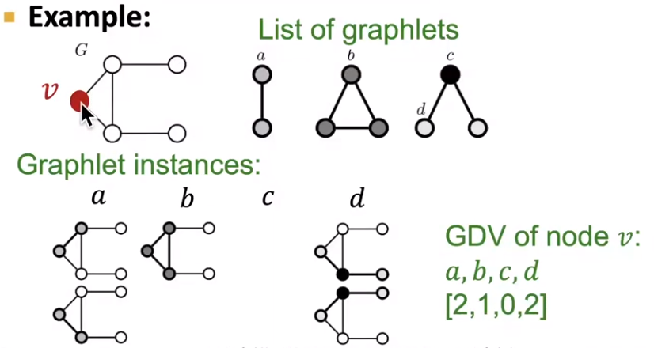
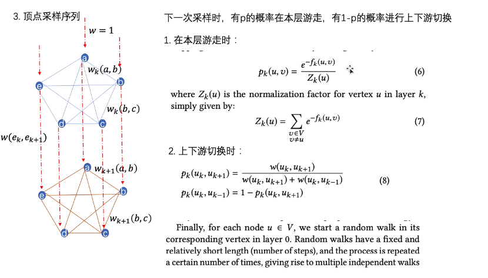

GNN
课程描述：cs224w
课程主页：https://web.stanford.edu/class/cs224w/
课程笔记：https://snap-stanford.github.io/cs224w-notes/
视频链接：https://www.bilibili.com/video/BV1YB4y1S7An/
此处查看实现代码：GNN_PyTorch.ipynb, networkx 计算基本特征、Pagerank
图论
Graph Theory - 图论手写笔记(pdf) 数学知识储备
e.g. 一些 Graph invarients 来初步判断是否同构
Traditional
Uses Hand-designed features for:
- Graph-level Task: Find features that characterize the structure of an entire graph
- Node-level Task: Node classification
- Link-level Task: Predict new links based on existing links
- Form 1: 随机删除一些Edges，然后尝试复原
- Form 2: 依据t0时刻的图，预测t1时刻的Edges
Concepts
-
G=(V,E) -- V为顶点(Node)集合，E为边(Edge)集合
-
子图(Subgraph): V'为V子集，E'为E子集，则G'=(V',E')为G的子图。
Non-isomorphic directed subgraphs of size 3： -
连通图(Connected Grap): G中任意两个不同的顶点都连通(有路径)，则称G为连通图；有向图G中，如果每对顶点都强连通（vi<-->vj）,则G是一个强连通图，如果原图去掉方向后 每对顶点都连通,则G是一个弱连通图
-
连通分量(Connected Components): 无向图的一个极大连通子图，或有向图的一个极大强连通子图。‘极大’意为：连通图只有一个连通分量，即其自身；非连通图有多个连通分量。
-
最短路径(Minimal Path) d(i,j)= vi到vj所经过的边
-
图直径(Diameter): max(最短路径)
-
随机图(random graph): 设定顶点数、边密度，随机生成的一张图(e.g.交换边链接的顶点/从完全图中随机删除边)
-
Motifs: G中反复出现的重要互连模式(i.e.子图)，其出现频率比随机图中更高(Significance:Z-score)；允许motif间部分重叠
-
Graphlets: Rooted connected non-isomorphic sunbraphs
注：判断两个子图是否同构？从G中统计某种子图模式的频次？除了一些明显的Graph invarients信息，一般方法是子图中选定一个锚定顶点、遍历G寻找与其邻域结构相同的顶点，成本很高；GNN获取邻居信息的“有序嵌入”可以判断两个顶点是否同构/包含
{kind=link}
搜寻Motifs的工具: SPMiner 为所有大小为 1~k 的子图建立“有序嵌入”空间；空间中，位于子图A右上方的其它图都包含A、因此它们的数目就是子图A的出现频次
{kind=link}
Matrix (详见图论笔记)
Matrix 元素 aij 表示 (i 行，j 列) 的值
-
邻接矩阵(Adjacency): aij 表示vi指向vj的边数；行和(列和)为Node的出(入)度。
-
关联矩阵(Incidence): aij 表示vi与ej关联的次数,取值 [0,1,2(自环)]，列和为2；若为有向图，1表示vi为起点，-1表示vi为终点，列和为0。Question：有向图的自环怎么表示？
-
度矩阵: dii=i列之和，其余部分0
-
拉普拉斯矩阵(Laplacian): L = 度矩阵D - 邻接矩阵A; 对称、每一行元素之和都为0; 实际代表了图的二阶导数
Node-level Feature
Importance-based / Structure-based Features
-
度(Degree): 与顶点v接触的边的数目；有向图中分为出度、入度
-
中心性(Centrality): 说明在G中这个顶点的重要程度
-
度中心性(Degree): Degree/(n-1)， n为顶点总数
-
特征向量中心性(Eigenvector): 对邻接矩阵A分解特征值，最大特征值对应的特征向量即为图中各顶点的特征向量中心性。（优点：也体现了邻居顶点的度）
-
介数中心性(Betweenness): 除去该顶点外、其余顶点两两间最短路径中，经过改顶点的比例
-
连接中心性(Closeness): Closeness = 1/sum(此顶点到其余所有顶点最短路径)
-
-
Clustering coefficient: 顶点v的 $e_v = \frac{相邻顶点集内部的Edge数目之和}{相邻顶点集内部的两两组合数}$
-
PageRank 衡量顶点重要性的某种权重: $PR(u)$ = $ \frac{1-d}{N} + d * \sum_{v\in B}\frac{PR(v)}{L(v)}$， 其中$B$表示所有指向u的顶点，L(v)表示顶点v的出链数目，d为阻尼因子(damping factor)。
d解决了Rank Leak、Rank Sink等问题；现实中，可以假设d为用户按照跳转链接来页面u的概率，余下的为通过u网址而来的概率。 -
HITS: $Authority(u)=\sum_{v\in B}Hub(v)$，其中$B$表示所有-->u的顶点；$Hub(u)=\sum_{v\in B}Authority(v)$，其中$B$表示所有u-->的顶点；亦是不断迭代至稳态。
-
Graph Degree Vector (GVD): 以G中顶点v为root，计算不同Graphlets的频次 
Link-level Feature
2个nodes间的link的feature: Edge/Path的特征
-
Distance-based Features
- 最短路径的长度
-
Local neighborhood overlap
-
Global neighborhood overlap
- Katz index: 邻接矩阵$A^k$中aij就是$v_i$与$v_j$间长度K的Path的频次，Katz index = $v_i$与$v_j$间(1到无穷)长度Path的频次总和
- Katz index: 邻接矩阵$A^k$中aij就是$v_i$与$v_j$间长度K的Path的频次，Katz index = $v_i$与$v_j$间(1到无穷)长度Path的频次总和
Graph-level Feature
Kernel Methods: 基于种种kernel计算出feature频次vector、其dot product就是kernel similarity
-
Bag-of-Nodes
-
Bag-of-Node-Degrees
-
Graphlet kernel: Bag-of-Graphlets (unrooted，这点不同于GVD)， worst case NP-hard
-
Weisfeiler-Lehman kernel: k+1时刻顶点v的颜色=HASH(k时刻顶点v的颜色、k时刻顶点v所有邻居的颜色); HASH可以是定义的任何操作(e.g. sum, 取余)。HASH完成后，统计两个G的颜色分布vector、计算WL kernel similarity。
-
Modularity Q 衡量 Community Detection (e.g.Louvain算法) 的效果，若社区内部边的数目高于随机期望（即社区之间边的数目低于期望）、可能是顶点集中为社区

Node Embedding
- Encoder: 将nodes表示为向量 (representation vector)，特质相似的nodes的embedding应该更加相似 (e.g. embedding vectors 间的 dot product 尽可能大)
- 同质性(homophily)：顶点与其邻居的embedding应该很相似
- 结构等价性(structural equivalence)：顶点若在图上处于相似的结构位置，其embedding应该很相似
有些时候，我们可以将 Encoder 视为一个矩阵 Z = d × |V|，它可以将 G(V,E) 中的每一个顶点 v = [0 0 ... 1 0 ...] 都映射到d-维嵌入空间
Walks + SkipGram
NLP中，Word2Vec 的两种建模方法都基于上下文词组获取 word embedding：经常一起出现的词，它们的Embedding也理应相似(dot product 尽可能大)
1. SkipGram: 给定word，预测上下文词组[a,b,c,d]
[word: one-hot] --> [word: Embd] --> [P(?|word): for the full dictionary]
训练时，设定窗口大小为2时，输入语句 We are about to study the idea of deep learning
于是某个单词 study 窗口内的上下游词组可组成训练集-正样本对：(目标词,上下文词)
(study, about)
(study, to)
(study, the)
(study, idea)
2. CBOW: 给定上下文词组[a,b,c,d]，预测 word
[a: one-hot] --> [a: Embd] --> Merged / [word: Embd] --> [P(?|abcd): for the full dictionary]
[b: one-hot] [b: Embd]
..... .....
Deepwalk: G中随机游走生成序列，以此序列集为SkipGram 的训练资料，达成Node embedding
{kind=link}
{kind=link}
Node2Vec : Biased Walks生成序列(p大-倾向于远处-DFS，q大-倾向于周边-BFS)，以此序列集为SkipGram的训练资料
{kind=link}
{kind=link}
LINE: 1-hop
-
一阶相似度：两个顶点间（顶点向量的内积 -> 顶点相似度 -> 边权）
- 联合概率分布 $p_1(v_i,v_j) = \frac{1}{1+exp(-u_i^T u_j)}$，其中$u_i$是顶点$v_i$的低维向量表示
- 经验概率分布 $\tilde{p}_1(v_i,v_j) = \frac{w_{ij}}{W}$，其中$w_{ij}$是Edge(i,j)的权重(若无设定，则都是1)，W是G中所有w之和
- 优化目标为最小化两个分布的距离 $O_1 = distance(\tilde{p}_1(∙,∙) | p_1(∙,∙))$，distance可以是KL-divergence，忽略常数项后 $O_1 = - \sum _{(i,j) \in E} w_{ij} \log p_1(v_i,v_j)$
-
二阶相似度：顶点Neighbors的重合程度（与所有其他顶点间的1阶相似度向量 -> 内积 -> 邻居相似度）
- $p_2(v_j|v_i) = \frac{exp({u'}_j^T u_i)}{\sum_{k=1}^{|V|}{exp({u'}_k^T u_i)}}$，$u_j$: 该顶点本身的向量表示，$u_j'$: 该顶点作为其它顶点邻居时的向量表示
- $\tilde{p}_2(v_j|v_i) = \frac{w_{ij}}{W_i}$ W是$v_i$所有出链/Degree的w之和
- 优化目标 $O_2 = \sum _{(i,j) \in E} \lambda_i * distance(\tilde{p}_2(∙,v_i)||p_2(∙,v_i))$ 为两个分布的距离，$\lambda_i$是控制顶点重要性的因子，distance可以是KL-divergence，忽略常数项后 $O_2 = - \sum _{(i,j) \in E} w_{ij} \log p_2(v_j|v_i)$
{kind=link}
{kind=link}
SDNE (Structural Deep Network Embedding) 简单的来说就是用邻接矩阵作为输入（Neighbor信息），训练一个AutoEncoder来进行Embedding，它的1st/2nd-Order定义和LINE一样 (Loss_1 = 相邻顶点Embedding_y的距离，Loss_2 = 邻接向量_x的重构误差)且加入正则与稀疏图的应对
Struc2Vec: k-hop + walk
注：这个笔记更清晰 & k应该不会需要很大，毕竟有时候3-hop的邻居就会覆盖全图了
对不同距离的邻接信息建立图层（1/边权 = 顶点间距离 = 上一层距离 + 本层邻居集差异），然后在图层中或图层之间游走，得到的序列输入SkipGram（空间结构相似性 - 指远处的邻居信息？）
- $f_{k}(u,v) = f_{k-1}(u,v) + g( s(R_k(u)),s(R_k(v)) ) $
- $f_{k}(u,v)$为顶点u、v间k-hop结构距离
- $R_k(u)$为顶点u的k-hop邻居集，例如：$R_1(u)$ = {A,C,F,D}
- $s(R_k(u))$为顶点u的k-hop邻居集对应的度，例如：$s(R_1(u))$ = {1,2,2,2}
- $g(D1,D2)$为D1,D2之间距离函数，可用DWT
- 根据$f_{k}(u,v)$距离，构建k-hop Weighted Graph，每个hop为一个layer、layer之间也由weighted edge
- hop内边的权重$w_k(u,v)=e^{-f_{k}(u,v)}$
- hop之间边的权重
- $w(u_{k},u_{k+1}) = log(\Gamma_k(u) + e)$, k= 0...k*-1
- $w(u_{k},u_{k-1}) = 1 $ k= 1...k*
- $\Gamma_k(u)$ : layer k 中, 与顶点u链接、且$w$大于$\overline w_k$的边的数量
- 随机游走采样，p表示本层游走的概率，(p-1)表示游走至其它layer的概率

{kind=link}
GCN
我们不建议将G的接邻矩阵和特征矩阵直接作为DL模型的输入，因为这对顶点的顺序非常敏感
GCN/GraphSAGE 本质上可以视为对 k-hop neighbors 的层级加权聚合，从(k-1)层起、每一个的顶点都由其邻居聚合而来、直到0层的目标顶点（以一种确定计算图/采样邻居、训练每一层的Aggregator），获得的 node embedding 可被投入后续DL模型

Graph Attention Network (GAT) 用注意力定义估邻居顶点的权重
Graph Embedding
- 整合所有Nodes的嵌入向量 (e.g.Sum/Concat)
- 将(sub)graph视为一个'virtal node'
- Anonymous Walk: 设定node index为在随机游走中第一次被访问时候的index。匿名方法有助于得到网络的全局拓扑结构
- 一次Anonymous Walk后得到一条图示index vector
- feature-based model: 统计index vector pattern为feature，有点统计graphlet这样的感觉
- data-driven model: 借鉴NLP思想，将一次walk视为一个word，将G视为一篇document，经过同一node的walk视为co-occurring。对于每一个顶点u，采样一组co-occurring SET，训练G的embedding，目标函数：$\underset{G_{embedding}}{max} \sum_{i \in coSET}{P(word_i | words_{cooccurring}, G_{embedding})}$
Use Embedding
可以是对于 Node/Graph 某种特征的判断或预测、是否有异常的顶点或结构，Nodes间是否有关系、关系的方向
Heterogeneous Graph
异构图（Heterogeneous Graph）中，存在不同类型的顶点和边 --- 定义(源顶点类型,边类型,目标顶点类型)为一种关系，不再自由跳转全图、而是限定在相应关系可达的子图中
想象 Heterogeneous Edge (Relation) 的情况，共有三种不同的边类型(A/B/C)、存储于相应的三个矩阵中；NodeX 的多条边中，三种边类型所对应的邻顶点也可相应的分为三种；对每个种类分别进行聚合、再聚合A/B/C类型的结果 (RGCN )
{kind=link}
原版GAT不支持异构图，因为为每种关系引入一组注意力神经网络代价太高。Heterogeneous Graph Transformer (HGT) Fig2将注意力机制分解为顶点注意力和边注意力，因而可行
想象有 N=3 种顶点和 E=2 种边，(源顶点,边,目标顶点)的可能组合有 N*E*N = 3*2*3 种，即需要18种注意力
但HGT只需要 5 种
示例-DeepMAPS：HGT迭代Cell(=RNA+ATAC)-Gene异构图、如是分别得到二者的Embedding矩阵；根据Embedding对Cell聚类、基于Attention信息得到得到Celltype(特定TF)-Gene的信息、即GRN？
Knowledge graph

知识图（Knowledge graph）也算是一种异构图，顶点表示实体（n.药/蛋白/基因）、边表示两个实体之间的关联（v.治愈/抑制/编码）写作三元组 (h,r,t)；实体、关系都嵌入同一个k维空间：(h,r)的表示应该尽可能接近t的表示
如何定义接近？不同算法设计了不同的 $f_r(h,t)$ score

(离散数学二元关系的一些性质-图论笔记P5: Sym, Antisym, Compos/Transitive)
KG的常见任务是图谱补全 (h,r) -> t 即推理任务(Reasoning)，表述为一系列的Query：Query嵌入表示 q = h + r1 + r2 + ...
{kind=link}
| KG Queries | $(h,r) -> t$ | 说明 |
|---|---|---|
| One-hop | $(h=Flu,(r=Causes))$ | Flu 造成了什么 |
| Path | $(h=v_a,(r=r1,r=r2))$ | 从r1的结果中再查询r2的指向 |
| Conjunctive | $(h=D1,(r=Treat)) , (h=D2,(r=Cause))$ | 两个 One-hop 查询结果的交集 |
我们可以用一个 box (center,offset) 框住某个单次查询的结果，也可以将每个实体视为一种 zero-volume box；而关系则是一种投影运算 Box * r -> Box；这样求交集的操作会变得简单（不过Box不支持Union操作，建议把合并挪到最后一步）：Query2box
{kind=link}
一般采用实体与box的边界的距离；当实体在box内部时，距离值为负数
Generative GNN
-
GraphRNN: 生成图的步骤是一系列顶点/边的添加，可以视为某种序列生成
- BFS排序最近生成的顶点、忽略早就完成的就顶点，减少边生成的遍历对象
-
RL 适用于某些小分子结构的生成，e.g. DrugLike?
-
其它深度模型也可以用来：生成顶点特征，然后再预测边/生成图结构
{kind=link}